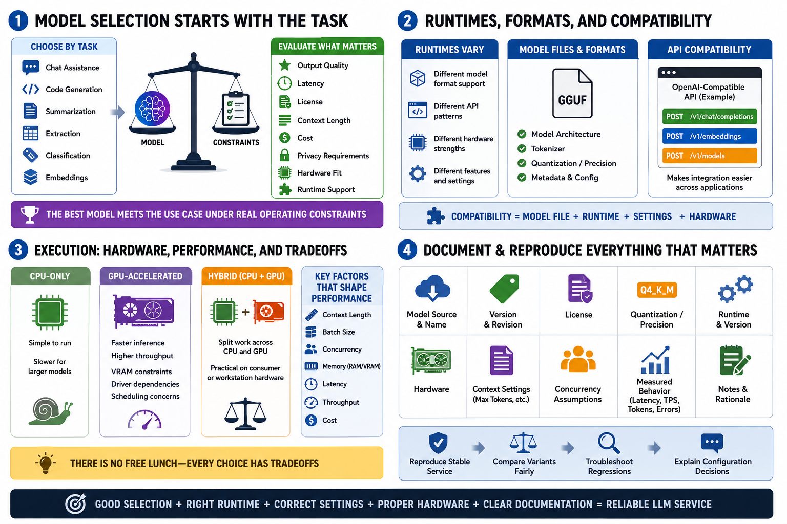

Runtime and Model Selection
Connecting to LMS... Progress: in progress

Narration
Model selection starts with the task. A model used for chat assistance may not be the right model for embeddings, code generation, summarization, extraction, or structured classification. Teams should consider output quality, latency, licensing, context length, cost, privacy requirements, hardware fit, and support in the chosen runtime. The best model is the one that meets the use case under real operating constraints.
Runtimes differ in the model formats they support, the API patterns they expose, and the hardware they use well. Some local runtimes provide OpenAI-compatible API shapes at a high level, which can make application integration easier. GGUF and other model packaging concepts matter because the runtime has to understand the model file, tokenizer, architecture, and quantization. Compatibility is a product of file, runtime, settings, and hardware.
Execution may be CPU-only, GPU-accelerated, or hybrid. CPU-only serving can be simple but slow for larger models. GPU acceleration can improve performance but introduces VRAM constraints, driver dependencies, and scheduling concerns. Hybrid execution may split work across CPU and GPU, which can be practical on consumer or workstation hardware. Context length, batch size, concurrency, and memory tradeoffs all shape the result.
Document working model and runtime combinations. Record model source, version, license, quantization or precision, runtime version, hardware, context settings, concurrency assumptions, and measured behavior. This helps reproduce a stable service, compare variants fairly, troubleshoot regressions, and explain why a particular configuration was selected. Without documentation, model serving becomes a fragile collection of lucky settings.